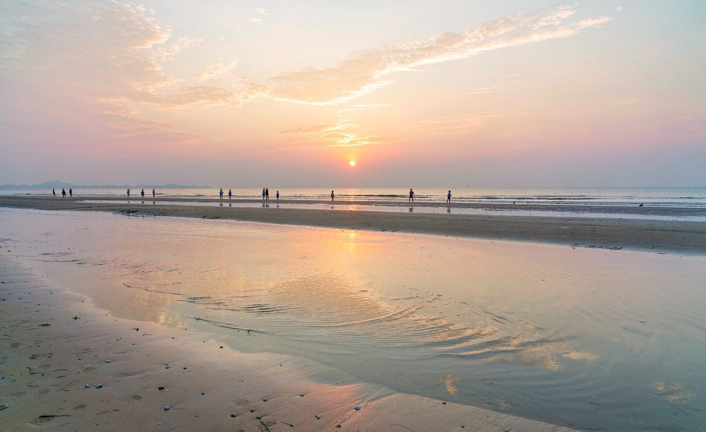

Day by day
五天四晚
四晚都住汕头东海岸，行李不用搬。点上面的日期切换，也可以用键盘 ← → 翻页。

Day 1 · 10/01 周四
深圳 → 汕头
340 km · 中午出发 · 落地海景房
今天只做一件事：把车开过去。中午出发会撞上国庆首日最堵的时段，
340 km 平时 5 小时出头，今天大概率要 8–10 小时。不安排任何景点，落地就休息。
12:00
南山 / 宝安出发
路线：机荷高速 → 惠深高速 → 深汕高速（G15） → 汕头。
全程约 340 km。
出发前把电充满，检查胎压、玻璃水、ETC 卡。
出发前把电充满，检查胎压、玻璃水、ETC 卡。
15:00
前后
前后
服务区补能 1 次（陆丰 / 汕尾一带）
按 Z9GT 的补能速度，约 9 分钟就能从 10% 冲到 97%。别绑饭点，充完就走。
20:00
–22:00
–22:00
抵达汕头东海岸，入住海景房
东海岸片区在龙湖区东侧，是汕头海景房最集中的地方，紧邻津湾公园和东海岸公园。
选带地下停车场和充电桩的酒店 —— 明天一早要出车，今晚把电补满，岛上一整天不用操心充电。
下单时备注高楼层海景，避免被周边建筑挡住视野。
选带地下停车场和充电桩的酒店 —— 明天一早要出车，今晚把电补满，岛上一整天不用操心充电。
下单时备注高楼层海景，避免被周边建筑挡住视野。
22:00
（可选）
（可选）
如果有力气，去吃个夜宵
东海岸到金平区龙眼南路约 10 km，打车 15–20 分钟、十几块钱。
楼下鸡翅（龙眼店）营业到 24:00，瑞娇嫲嫲和金二顺都开到凌晨 2:00 —— 开了一天车还能吃上现炸鸡翅或一碗生腌，这趟就没白来。
累了就直接睡，明天再补也来得及。
楼下鸡翅（龙眼店）营业到 24:00，瑞娇嫲嫲和金二顺都开到凌晨 2:00 —— 开了一天车还能吃上现炸鸡翅或一碗生腌，这趟就没白来。
累了就直接睡，明天再补也来得及。
今晚住宿 汕头东海岸（龙湖区），第 1 晚，连住 4 晚不换店。

Day 2 · 10/02 周五
南澳岛一日往返
68 km 逆时针环岛 · 看完日落出岛
今天全程最重，成败全在出发时间。预约时段、过桥排队、热门点停车，
全都靠「早」来解决。06:00 出门，别再晚。
06:00
东海岸出发 → 莱芜湾核验点
东海岸到莱芜湾欢乐世界 A 区约 30 分钟。
核验要出示：「南澳畅行」预约成功截图 + 行驶证。
约 30 分钟后到桥头，走预约通道，赶在 9 点后的车流峰值前进岛。
核验要出示：「南澳畅行」预约成功截图 + 行驶证。
约 30 分钟后到桥头，走预约通道，赶在 9 点后的车流峰值前进岛。
06:40
过南澳大桥
9 座及以下客车 96 元（入岛一次性收双程），出岛不再收费；法定节假日 7 座及以下私家车免费，国庆很可能不收费。
桥面约 9 km，全程限速 60 km/h，区间测速加抓拍，严禁停车拍照、超车、倒车、上下客。
国庆期间可能实行单向通行管制，跟随路面标识分流入岛、出岛，不要随意变道穿插。
桥面约 9 km，全程限速 60 km/h，区间测速加抓拍，严禁停车拍照、超车、倒车、上下客。
国庆期间可能实行单向通行管制，跟随路面标识分流入岛、出岛，不要随意变道穿插。
环岛方向：逆时针。下桥后右转，由西向南再向东、向北绕一圈，
全线单向沿海、拍照全程顺光、不走回头路。这个方向是公认最优。
07:30
启航广场 · 长山尾灯塔
进岛第一个地标，红白灯塔配跨海大桥，评分 4.9。停 15–20 分钟打卡大桥同框机位。
08:30
田仔地质公园
海蚀崖加礁石海岸，浪大的时候很壮观。停留约 40 分钟。
09:30
钱澳湾灯塔
奶油白的小灯塔配海边栈道，小众文艺机位。旁边石潭寺停车场全天免费，可以停这里。
10:20
海丝广场 · 前江湾
打卡地标墙，前江湾沙滩平缓，适合走一走。
11:30
后宅镇午餐（休整 1 小时）
南澳县城中心，海鲜市场和平价餐馆都在这。
必吃：紫菜炒饭、南澳蚝烙、马鲛鱼丸、海鲜粥、白灼小管。
最省钱的吃法：后宅市场自己买海鲜（花蟹约 25 元/斤、皮皮虾约 30 元/斤），找档口加工，加工费 10–20 元。
避坑：青澳湾沿街排档比后宅贵约 30%，正餐尽量回后宅或云澳吃。
必吃：紫菜炒饭、南澳蚝烙、马鲛鱼丸、海鲜粥、白灼小管。
最省钱的吃法：后宅市场自己买海鲜（花蟹约 25 元/斤、皮皮虾约 30 元/斤），找档口加工，加工费 10–20 元。
避坑：青澳湾沿街排档比后宅贵约 30%，正餐尽量回后宅或云澳吃。
13:00
云澳渔港 → 宋井
云澳渔港停满渔船，彩色养殖浮球很上镜，可买刚上岸的海鲜。顺路参观宋井
（南宋古井，离海极近却井水甘甜，门票约 16 元）。
14:10
三囱崖灯塔
红白双子灯塔立在悬崖上，环岛核心打卡点，评分 4.4。停留约 1 小时。
15:30
青澳湾 + 北回归线「自然之门」
南澳最出名的沙滩，沙细水清、坡度平缓，评分 4.7。北回归线标志塔就在黄金海岸内，免费，评分 4.6。
这里国庆人最多，停车位极紧张，做好心理准备。
这里国庆人最多，停车位极紧张，做好心理准备。
17:00
金银岛 / 深澳总兵府（快速一逛）
金银岛是花岗岩叠成的礁石海景（门票约 6 元），总兵府是明清海防遗址（门票约 13 元），都在深澳镇一带，顺路二选一。
17:40
蛴仔澎风车山 —— 等日落
被叫做「宫崎骏同款风车海」。42 号风机视野最佳，2 号公路一带是公认的「橘子海」日落机位。
南澳的日落安排在这里，是因为看完直接顺着西线出岛，不用折返。
南澳的日落安排在这里，是因为看完直接顺着西线出岛，不用折返。
18:30
走马埔彩虹海 → 回后宅镇吃晚餐
彩虹海是成片彩色养殖浮球，顺路看一眼。
然后去后宅镇吃晚饭 —— 这一顿不只是吃饭，是故意用来躲开 17:00–19:00 的傍晚出岛高峰。
推荐 瑞娇嫲嫲 · 南澳后宅店（后宅镇海滨路 100 号首层，营业到 01:00）—— 你点名想吃的生腌，岛上就有分店。
然后去后宅镇吃晚饭 —— 这一顿不只是吃饭，是故意用来躲开 17:00–19:00 的傍晚出岛高峰。
推荐 瑞娇嫲嫲 · 南澳后宅店（后宅镇海滨路 100 号首层，营业到 01:00）—— 你点名想吃的生腌，岛上就有分店。
20:00
出发出岛
这时大队人马已经散得差不多了，桥上明显比 17–19 点好走。出岛不再收费，直接过。
约 21:00 回到汕头东海岸。
约 21:00 回到汕头东海岸。
今晚住宿 汕头东海岸，第 2 晚。
如果没抢到 10/2 的预约：把这一天整体挪到 10/3 或 10/4，
后面的汕头行程顺延一天即可，结构不受影响。

Day 3 · 10/03 周六
汕头老城 + 美食主线
你点名的店里，今天走掉三家
今天全程不用开车。小公园、龙眼南路、金新路、金砂东路彼此都在几公里内，
从东海岸打车过去十几块钱，别自己开车找车位。
09:30
小公园开埠文化区 · 骑楼老街 · 汕头旅社
汕头老城核心区，骑楼加南洋风建筑，一路慢走拍照。汕头旅社是老网红机位。
10:30
鮀茶堂 · 汕头本土茶饮（商平路店）· 你点名的
金平区商平路 37 号（汕头旅社旁）｜10:00–22:00。你爱的「芝芝潮汕青芒」这里就有。
另外招牌是鸭屎香奶茶和竹筒茶，竹筒能带走当纪念。茶底用凤凰单丛，没有工业奶精的甜腻感。
12:00
午餐：小吴肠粉 / 老妈宫粽球
小吴肠粉（龙眼南路老店）手磨米浆现蒸，皮薄馅足；老妈宫粽球（升平路老妈宫戏台旁）百年老字号。二选一。
14:00
邻家果园梅汁水果· 你点名的
金平区金新路 118 号 1 座｜10:30–22:30。20 元一大盒梅汁 / 甘草水果，现切现拌。
还有鲜榨果汁、水果冰、水果酸奶。
15:30
霸道福 · 潮汕製冰店· 你点名的
金平区金砂东路 108 号（金讯大厦楼下，金砂总店）｜10:00–23:00｜人均约 30。
汕头高端炒酸奶的开创品牌，招牌是纯水果软冰淇淋（不含奶油、低糖）、炒酸奶，以及很有话题度的豆腐雪糕。
该品牌另有中山中路等门店，出发前用地图确认当天营业的那家。
汕头高端炒酸奶的开创品牌，招牌是纯水果软冰淇淋（不含奶油、低糖）、炒酸奶，以及很有话题度的豆腐雪糕。
该品牌另有中山中路等门店，出发前用地图确认当天营业的那家。
17:30
西堤公园 / 海滨路看日落
老码头风貌，日落时段最出片。吃点甜的降降温，在这里坐一会儿。
19:00
晚餐：杏花吴记牛肉火锅
金平区杏花西路 16 号｜09:30–21:30｜人均 80–100。必吃榜常客，务必提前线上取号。
涮肉口诀：匙柄 / 吊龙 / 雪花肉 8 秒；三花趾 / 五花趾 15 秒；胸口油 3–5 分钟。
蘸料：沙茶酱 + 普宁豆酱 + 芹菜珠。锅底只认牛骨清汤。
不想排队就换八合里海记牛肉火锅（汕头总店），或 60 年老字号福合埕。
涮肉口诀：匙柄 / 吊龙 / 雪花肉 8 秒；三花趾 / 五花趾 15 秒；胸口油 3–5 分钟。
蘸料：沙茶酱 + 普宁豆酱 + 芹菜珠。锅底只认牛骨清汤。
不想排队就换八合里海记牛肉火锅（汕头总店），或 60 年老字号福合埕。
21:30
龙眼南路夜宵
伟顺反沙屋（龙眼南路椰园 4 栋 103 号，现点现做的反沙番薯 / 芋头 / 咸蛋黄 / 油柑）、
纪德来甜汤（华山北路金墩园 21 栋 110，黑芝麻牛奶冰与大满贯必点）。
今晚住宿 汕头东海岸，第 3 晚。

Day 4 · 10/04 周日
补漏 + 机动日
不排硬任务，把前面落下的补齐
这天是刻意留白的。前面哪天累了，今天就能什么都不干。
下面按折腾程度由高到低给了三块，随意拼。
上午
睡到自然醒 → 补吃没排上的店
楼下鸡翅（龙眼店）：金平区龙眼西七巷 6 号，腐乳鸡翅、雪花鸡翅、反沙咸蛋黄、炸虾枣。
店面小、基本只能外带。
瑞娇嫲嫲潮汕生腌（龙眼南路总店）：金平区龙眼园北区 8 栋 104 号｜11:00–02:00 —— 如果 10/2 在岛上没吃到，今天补。
还有 老四肠粉、普宁反沙番薯芋头、长平老姿娘牛肉火锅。
瑞娇嫲嫲潮汕生腌（龙眼南路总店）：金平区龙眼园北区 8 栋 104 号｜11:00–02:00 —— 如果 10/2 在岛上没吃到，今天补。
还有 老四肠粉、普宁反沙番薯芋头、长平老姿娘牛肉火锅。
下午
三选一
A · 妈屿岛：海岛渔村加妈祖庙，开车可达，半天足够，最省心。
B · 礐石风景名胜区 + 海滨长廊：山海石景，适合慢走，看内海湾。
C · 澄海陈慈黉故居：被称作「岭南第一侨宅」，建筑控会喜欢。
都不想去就 D · 回小公园补拍，前两天没拍够的机位这天补。
B · 礐石风景名胜区 + 海滨长廊：山海石景，适合慢走，看内海湾。
C · 澄海陈慈黉故居：被称作「岭南第一侨宅」，建筑控会喜欢。
都不想去就 D · 回小公园补拍，前两天没拍够的机位这天补。
傍晚
买手信
老香黄、腐乳饼、束砂、凤凰单丛茶、达濠鱼丸。
去小公园老市区一带的老字号门店买，比景区门口便宜而且更正宗。
去小公园老市区一带的老字号门店买，比景区门口便宜而且更正宗。
晚上
收尾晚餐
把最想吃但还没吃到的那家留到今天 —— 生腌、牛肉火锅、海鲜大排档，任选。
今晚住宿 汕头东海岸，第 4 晚（最后一晚）。

Day 5 · 10/05 周一
汕头 → 深圳
07:30 前上路，把堵车留给后面的人
10/5 返程是个好选择。国庆高速免费到 10/7 24:00 才结束，但返程大军集中在 10/6 和 10/7。
10/5 走，路上会明显清爽。
06:30
起床收行李
酒店附近吃个肠粉当早餐。手信昨晚应该已经买好，没买的话趁早去老市区补一趟。
07:30
出发返深
路线反向：深汕高速（G15）→ 惠深高速 → 机荷高速 → 深圳南山 / 宝安。
途中
补能 1 次
选服务区快充，约 9 分钟。找桩用 比亚迪 App → 充电地图，看实时占用和功率。
13:00
–16:00
–16:00
抵达深圳
理想情况午后到家；若遇拥堵，最晚傍晚前后抵达。
Plan B（万一 10/5 也堵）
延后到 10/6 傍晚 18:00 后走，或提前到 10/4 晚上走夜路。免费时段到 10/7 24:00 才结束， 夜里下高速依然免费，而且高速晚上比白天好走。
夜驾注意：两人轮换、每 2 小时停一次、避开凌晨 3–5 点最困的时段。
延后到 10/6 傍晚 18:00 后走，或提前到 10/4 晚上走夜路。免费时段到 10/7 24:00 才结束， 夜里下高速依然免费，而且高速晚上比白天好走。
夜驾注意：两人轮换、每 2 小时停一次、避开凌晨 3–5 点最困的时段。